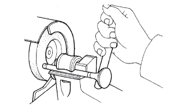
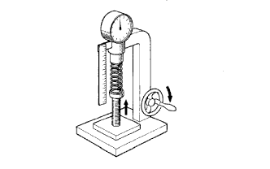
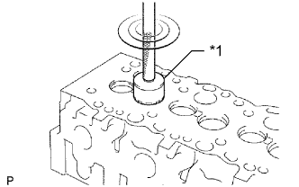

ГОЛОВКА БЛОКА ЦИЛИНДРОВ > ПРОВЕРКА |
| 1. CLEAN CYLINDER HEAD SUB-ASSEMBLY |
Clean the cylinder head.
Using a gasket scraper, remove all the gasket material from the surface that contact the cylinder block.
Using a wire brush, remove all the carbon from the combustion chambers.
Using a valve guide bushing brush and solvent, clean all the guide bushes.
Using a soft brush and solvent, thoroughly clean the cylinder head.
| 2. INSPECT CYLINDER HEAD SUB-ASSEMBLY |
Inspect the cylinder head warpage.
Using a precision straightedge and feeler gauge, measure the surfaces that contact the cylinder block and the manifolds for warpage.
| *a | Cylinder Block Side: |
| *b | Intake Manifold Side: |
| *c | Exhaust Manifold Side: |
Inspect the cylinder head for cracks.
Using a dye penetrant, check the combustion chamber, intake ports, exhaust ports and cylinder head surface for cracks.
If cracked, replace the cylinder head sub-assembly.
| 3. CLEAN VALVE |
Using a gasket scraper, chip off any carbon from the valve head.
Using a wire brush, thoroughly clean the valve.
| 4. INSPECT INTAKE VALVE |
Using a micrometer, measure the diameter of the valve stem.
Check the valve face angle.
Grind the valve enough to remove any pits and carbon.
Check that the valve is ground to the correct valve face angle.
| *1 | Valve Face Angle |
Check the head margin thickness.
| *1 | Margin Thickness |
Check the overall length of the valve.
Check the surface of the valve stem tip for wear.
If the valve stem tip is worn, resurface the tip with a grinder or replace the intake valve.
| 5. INSPECT EXHAUST VALVE |
Using a micrometer, measure the diameter of the valve stem.
Check the valve face angle.
Grind the valve enough to remove any pits and carbon.
Check that the valve is ground to the correct valve face angle.
| *1 | Valve Face Angle |
Check the valve head margin thickness.
| *1 | Margin Thickness |
Check the overall length of the valve.
|  |
Check the surface of the valve stem tip for wear.
If the valve stem tip is worn, resurface the tip with a grinder or replace the exhaust valve.
| 6. INSPECT INNER COMPRESSION SPRING |
Using a steel square, measure the deviation of the spring.
| *1 | Deviation |
 |
Using a vernier caliper, measure the free length of the spring.
|  |
Using a spring tester, measure the tension of the valve spring at the installed length.
| 7. INSPECT INTAKE VALVE GUIDE BUSH |
Using a caliper gauge, measure the inside diameter of the guide bush.
Subtract the valve stem diameter measurement from the guide bush inside diameter measurement.
| 8. INSPECT EXHAUST VALVE GUIDE BUSH |
Using a caliper gauge, measure the inside diameter of the guide bush.
Subtract the valve stem diameter measurement from the guide bush inside diameter measurement.
| 9. INSPECT VALVE SEAT |
|  |
Using a 45° carbide cutter, resurface the valve seats. Remove only enough metal to clean the seats.
| *1 | 45° Carbide Cutter |
 |
Check the valve seating position.
| *1 | Width |
Apply a light coat of Prussian blue to the valve face.
Lightly press the valve against the seat. Do not rotate valve.
Prussian blue appears 360° around the entire valve face, the valve is concentric. If not, replace the valve.
Prussian blue appears 360° around the entire valve seat, the guide and face are concentric. If not, resurface the seat.
Check that the seat contacts the middle of the valve face with the width below:
| 10. INSPECT EXHAUST VALVE SEATS |
Using a 45° carbide cutter, resurface the valve seats. Remove only enough metal to clean the seats.
Check the valve seating position.
Apply a light coat of Prussian blue to the valve face.
Lightly press the valve against the seat. Do not rotate valve.
Prussian blue appears 360° around the entire valve face, the valve is concentric. If not, replace the valve.
Prussian blue appears 360° around the entire valve seat, the guide and face are concentric. If not, resurface the seat.
Check that the seat contacts the middle of the valve face with the width below:
| *1 | Width |
| 11. INSPECT VALVE LIFTER |
 |
Using a micrometer, measure the lifter diameter.
Using a caliper gauge, measure the lifter bore diameter of the cylinder head.
Subtract the lifter diameter measurement from the lifter bore diameter measurement.
| 12. INSPECT CAMSHAFT OIL CLEARANCE |
Inspect the journal diameter of the camshaft.
Using a micrometer, measure the journal diameter of the camshaft for the camshaft bearing.
| Item | Specified Condition |
| No. 1 journal | 34.969 to 34.985 mm (1.3767 to 1.3774 in.) |
| Other journals | 27.969 to 27.985 mm (1.101 to 1.102 in.) |
Check the oil clearance.
Clean the bearing caps and journals.
Check the bearings for flaking and scoring.
If the bearings are damaged, replace the bearing caps and cylinder head as a set.
Install the bearings to the bearing caps and cylinder head.
Place the camshaft on the cylinder head.
Lay a strip of Plastigage across each of the journals.
| *1 | Plastigage |
Install the bearing caps (See page Нажмите здесь).
Remove the bearing caps (See page Нажмите здесь).
Measure the Plastigage at its widest point.
| *1 | Plastigage |
Completely remove the Plastigage.
Remove the camshaft.
| 13. INSPECT CAMSHAFT THRUST CLEARANCE |
Check the thrust clearance.
Install the camshaft.
Using a dial indicator, measure the thrust clearance while moving the camshaft back and forth.